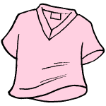
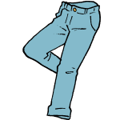

<ons-page id="coordinate">
  <ons-toolbar>
    <div class="left"><ons-back-button>Back</ons-back-button></div>
    <div class="center"><ons-icon icon="user-circle"></ons-icon>コーディネート</div>    
  </ons-toolbar>
    
 <div class="left">＜使用アイテム＞</div>

<div class="item">
    <ul>
      <li><a href="itemList">
      <p>ブラウス</p></a>
      <p></p></li>
      
      <li><a href="itemList">
      <p>パンツ</p></a>
      <p></p></li>
     
      <li><a href="itemList">
      <p>パンプス</p></a>
      <p></p></li>
    </ul>
  </div>

  <script>
    // 画面表示時
    ons.getScriptPage().onShow = function() {
    }
    // itemSelect画面へ
    function send_itemSelect(){
      document.getElementById('nav').pushPage('itemSelect.html', {});
    }; 
  </script>
  <ons-button onclick="document.getElementById('nav').popPage()">Click</ons-button>

<style type="text/css">
p img  {
  text-align: center; 
  width: 300px;
  height: 200px;
  max-width: 100%;
}
p  {
  text-align: center; 
}
.item p{
  text-align: left;  
}
a  {
  text-decoration: none;  
}
.menu ul{
  list-style-type:none;/*箇条書きのポッチを消す*/
  text-align: center;
  background:White;
}
.menu ul li { 
  display: inline-block;/*inline-blockにします*/
  width: 60px;/*幅も指定できる*/
  padding: 0px 0px;/*余白も指定できる*/
  margin: 1px 1px;/*余白も指定できる*/
  <!--margin-right:30px;--> 
  vertical-align: middle;/*縦の表示位置も指定できる*/
  border: 2px solid #ffaaaa;
  background: #FFFFFF;
  text-align: center;
  color: #ffaaaa;
}
</ons-page>